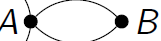
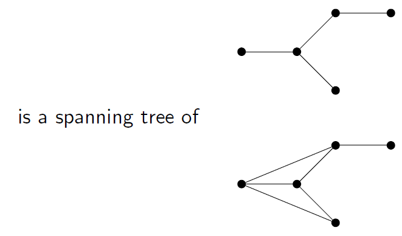
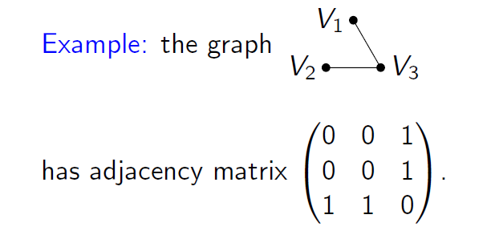
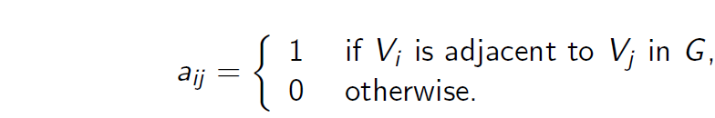
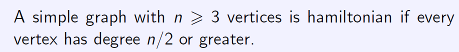

Graph
Multigraph ： multiple edges or parallel edges 除非强调，默认的图都是simple，就是说
不含loop和parallel edges
Directed graphs 有向图 Walk 一系列点，每一个都连着下一个
A walk is a sequence of vertices where each vertex is adjacent to the next.
A path is a walk consisting of distinct vertices. 路径是由不同的顶点组成的遍历
If every pair of vertices have a path (or a walk) between them, then we say the graph is connected.
每一个顶点都有路径
The degree of a vertex is the number of edges that include that vertex. (Degree是顶点边的数量)
If every vertex has the same degree k, then we say the graph is k-regular.
Connected性质：sum of the degrees equals twice the number of edges.
the sum of the degrees is even偶数
A tree is a connected graph with no cycles. A tree with n vertices has n-1 edges.
spanning tree 生成树 Every connected graph G contains a spanning tree.
由图生成一棵树，包括图的所有顶点，只留一条边，去掉所有循环


If two vertices are joined by an edge they are adjacent. 相邻接的
adjacency matrix 见上图
Number of walks计算??

Euler circuit 回到原点，闭合walk，每边就用一次
A connected graph is Eulerian if and only if every vertex has an even degree.
Euler trail 不用回到原点，闭合walk，每边就用一次
A connected graph has an Euler trail if and only if at most two vertices have odd degrees.
最多两个顶点是奇数
Hamilton cycle: visits each vertex exactly once.
